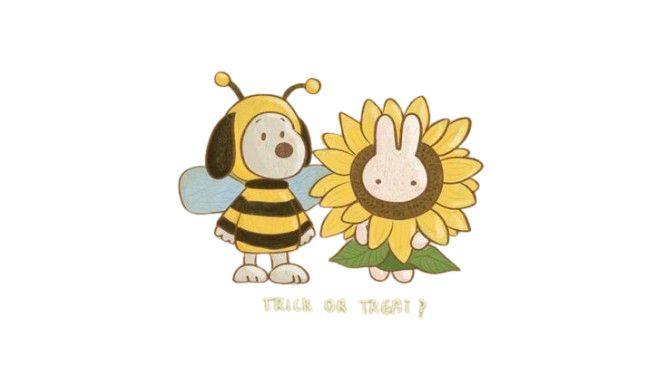

Pequeña Kika,
Hoy no te traje flores amarillas, pero sí una carta para ti. Perdóname si digo algo que suene raro o te llegue a ofender; intento ser sincero y abierto, aunque no soy muy bueno expresando mis sentimientos.
Primero, gracias por estar conmigo. Sé que no soy el chico más apuesto ni el mejor sacando temas de conversación, pero, a pesar de cómo soy, gracias por estar aquí. Deseo conocerte más; hay muchas cosas que me gustaría saber de ti, porque me gustas mucho.
Sé que en ocasiones no he sido totalmente sincero, pero de verdad, cuando estoy contigo me siento bien. No tengo palabras suficientes para explicar lo cómodo que me siento a tu lado. Me encanta verte; me gusta la forma en que me miras y la manera en que te expresas conmigo. Hay mucho que podría decir en esta carta sobre lo mucho que me gustas, pero prefiero decírtelo en persona.
Si pudiera darte algo, me gustaría darte la capacidad de verte a ti misma a través de mis ojos. Solo entonces entenderas de todo lo que eres ante mis ojos.
Dato curioso: eres la única persona a la que empecé a escribir tantas cartas después de mucho tiempo. Ya lo sabes, solo quería recordarte que en verdad eres importante para mí.
Te quiero mucho. Nunca lo dudes.

Con todo mi cariño,
Kevin